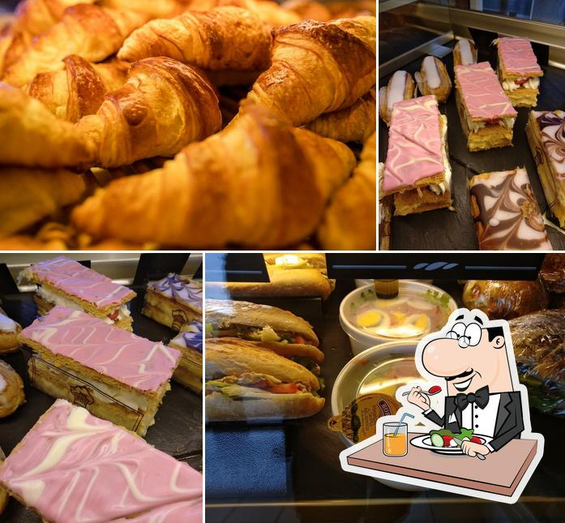

Boulangerie
La boulangerie du Tamisier vous acceuille toute la semaine du Lundi au Dimanche:

La boulangerie du Tamisier vous acceuille toute la semaine du Lundi au Dimanche:
La boucherie De clermont vous propose ses viandes raffinées et de qualité, ouvert du mardi au samedi de 8h à 14h et 15h a 19h situé au 7 Rue Sainte Genès. Venez découvrir les bons produits de chez nous.
L'épicerie du monde se situe 11 Rue Eugène Gilbert a Clermont-Ferrand, vous vendra des spécialités françaises et asiatiques, elle est ouverte tous les jours de 10h a 22h.

Le Comptoir Viking Clermont vous propose ses meilleurs boissons vikings ;) situé au 38 Rue Lamartine